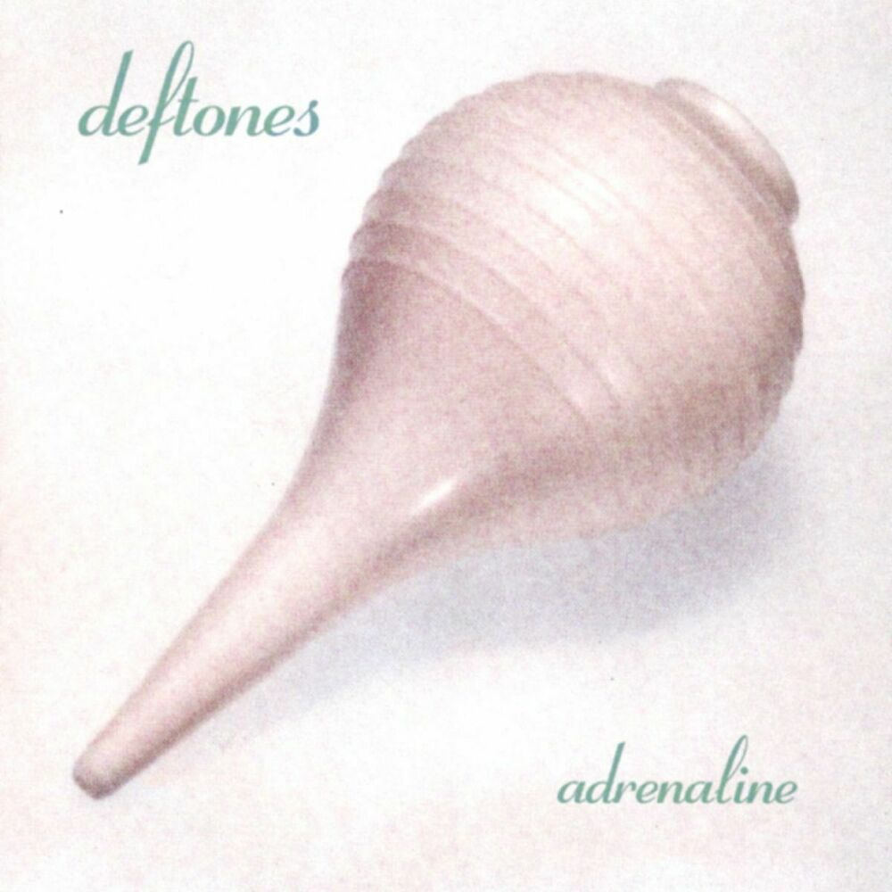
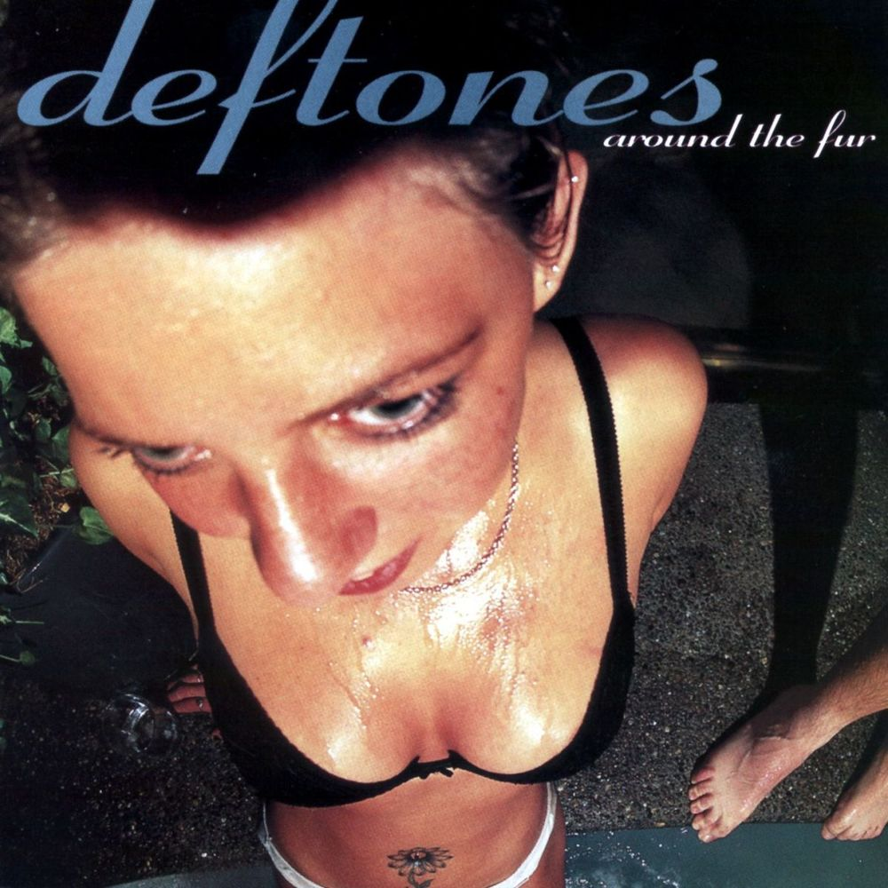
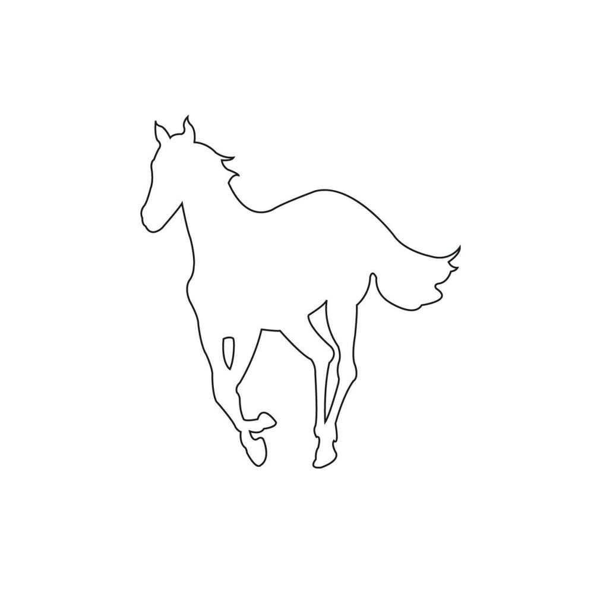
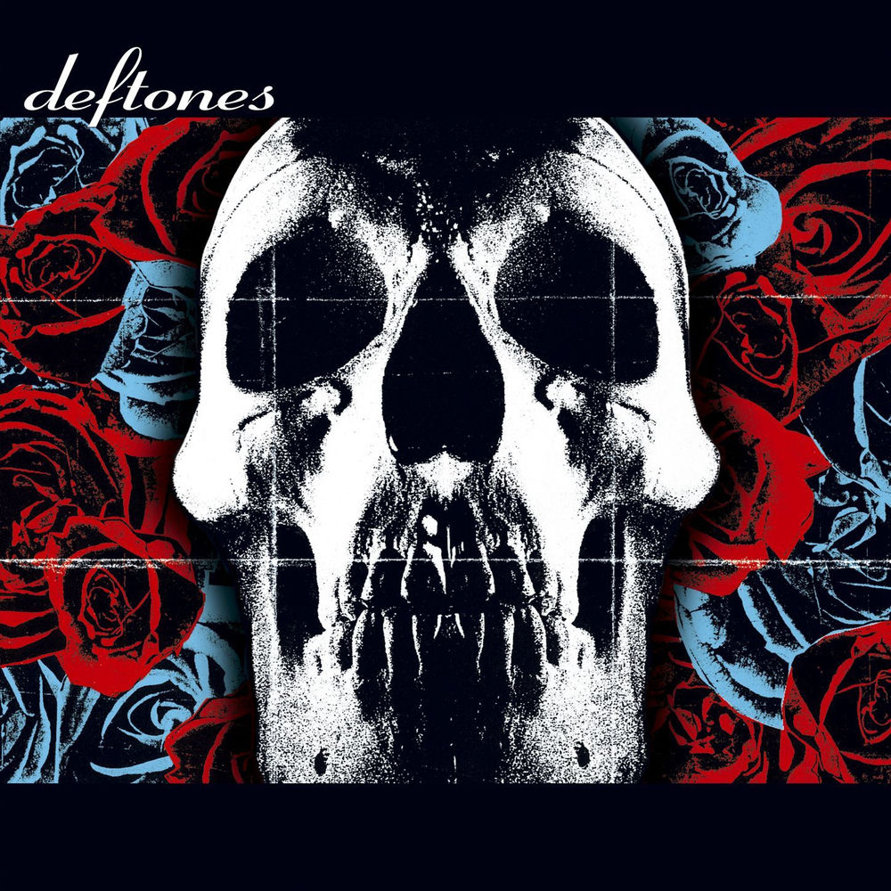
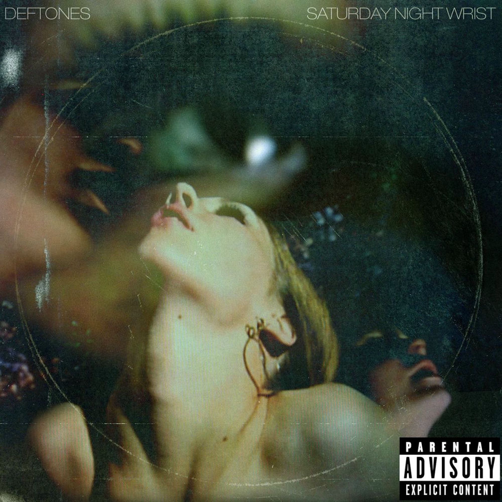
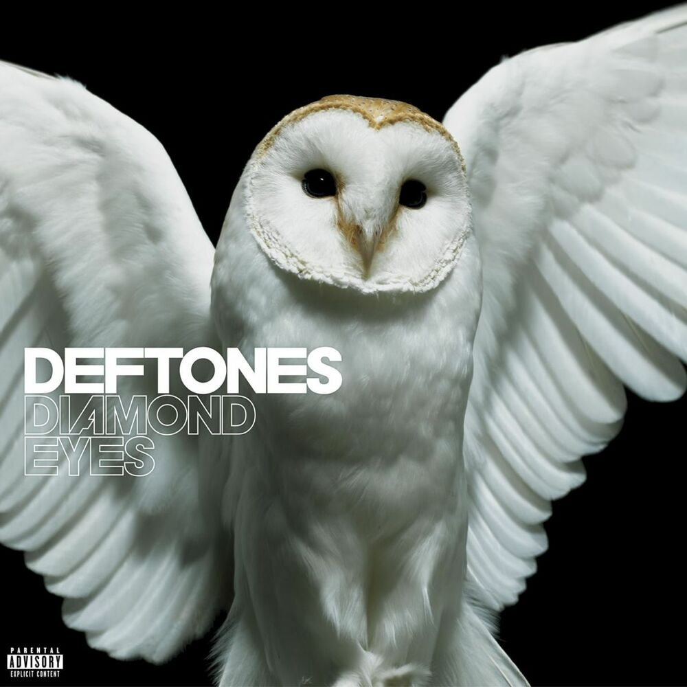
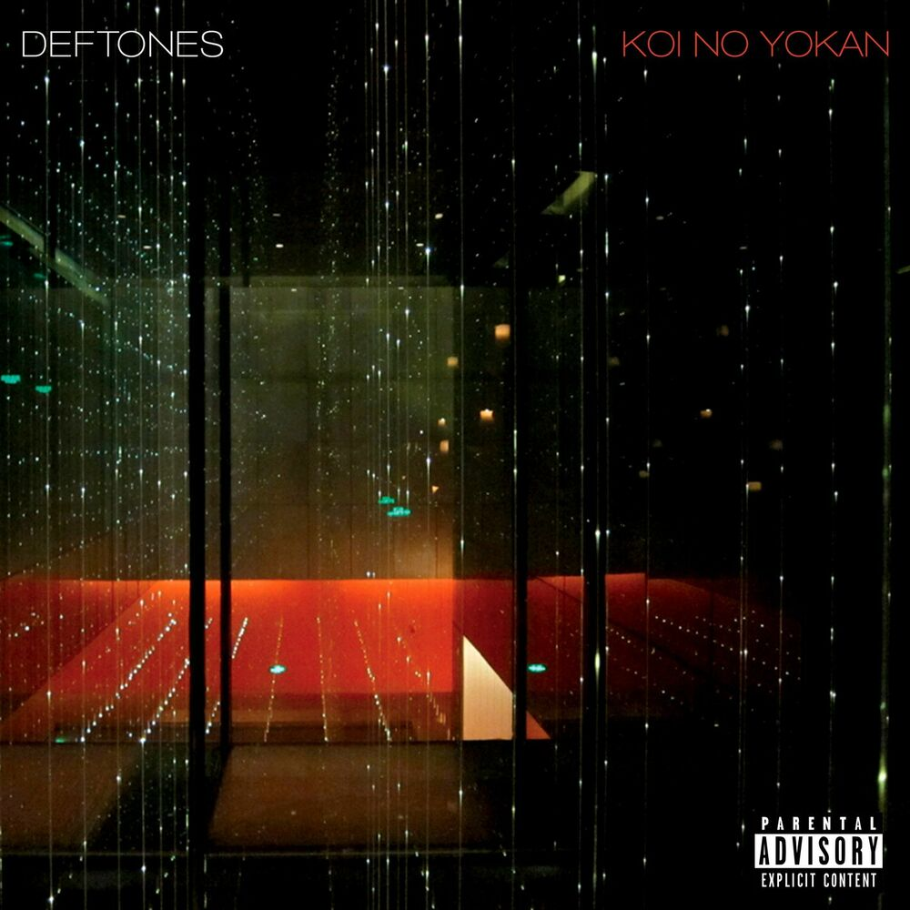
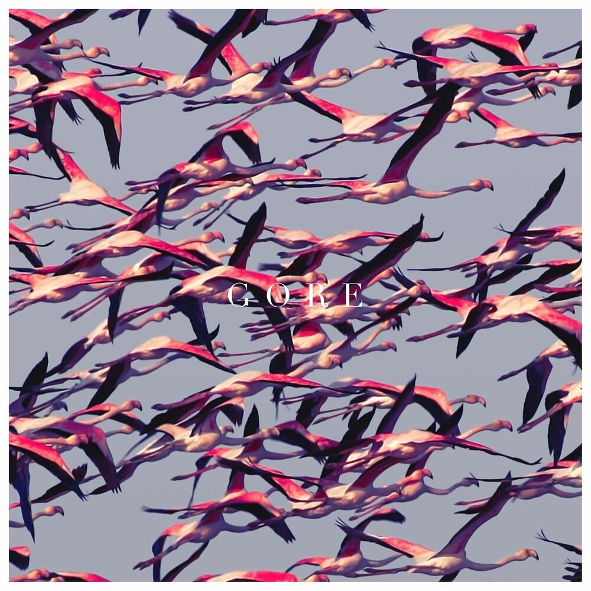
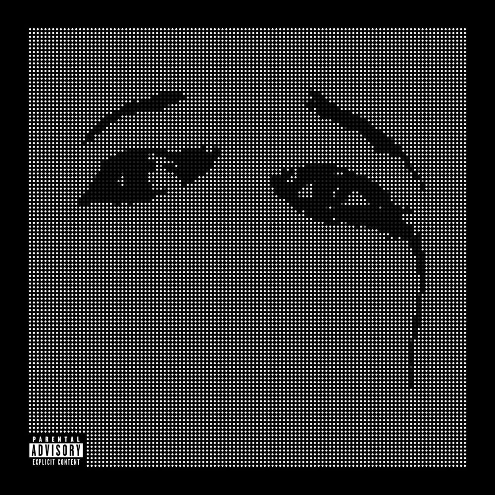
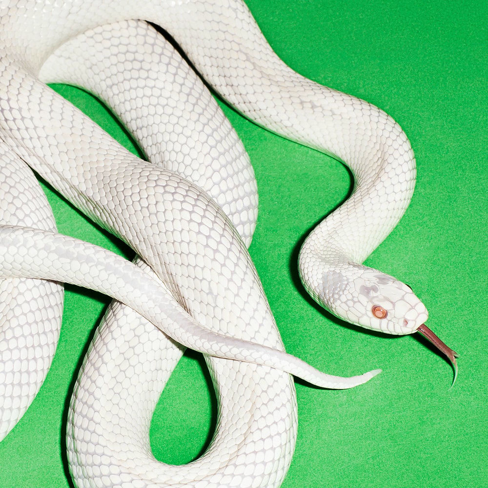

Discografía completa de Deftones
Álbumes de Estudio

Adrenaline (1995)
Debut con un sonido crudo y pesado.

Around the Fur (1997)
Consolidó su estilo con éxitos como "My Own Summer".

White Pony (2000)
Introdujo texturas y sonidos más experimentales.

Deftones (2003)
Un trabajo oscuro, pesado y atmosférico.

Saturday Night Wrist (2006)
Complejo, inquietante y extraordinariamente versátil.

Diamond Eyes (2010)
Un regreso directo, poderoso y emotivo.

Koi No Yokan (2012)
Una síntesis feroz de fuerza y melancolía.

Gore (2016)
Un balance de tensión, belleza y experimentación.

Ohms (2020)
Maduro, abrasivo y cohesivo de principio a fin.

Private Music (2025)
La banda lleva su intensidad hacia paisajes nuevos.